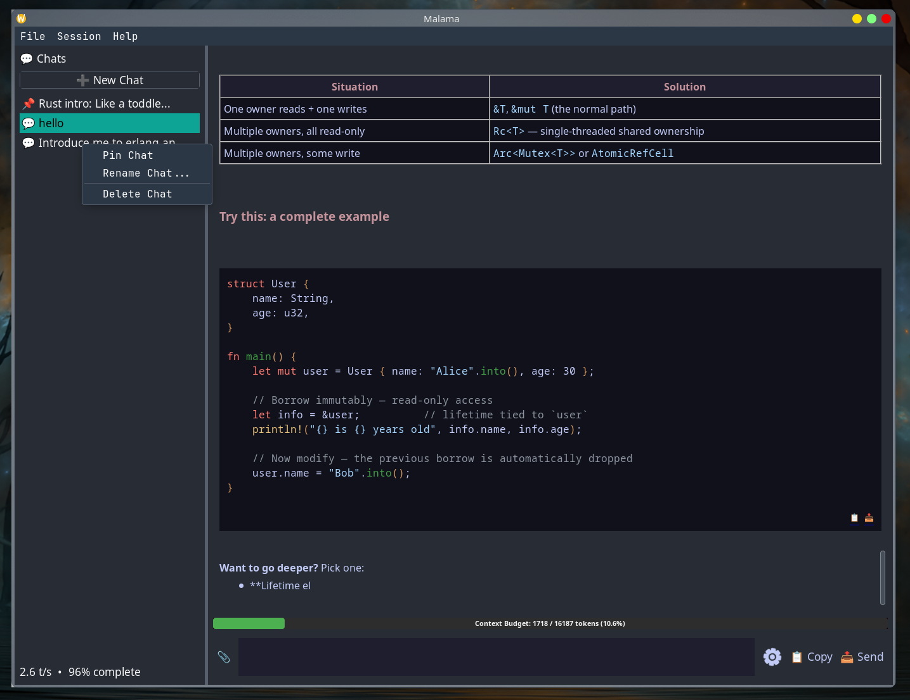
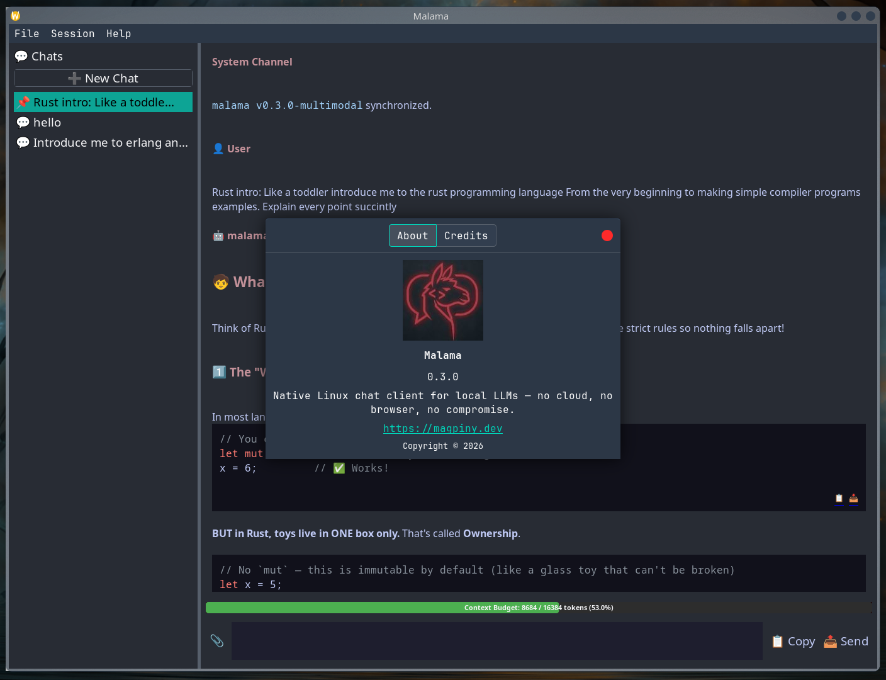
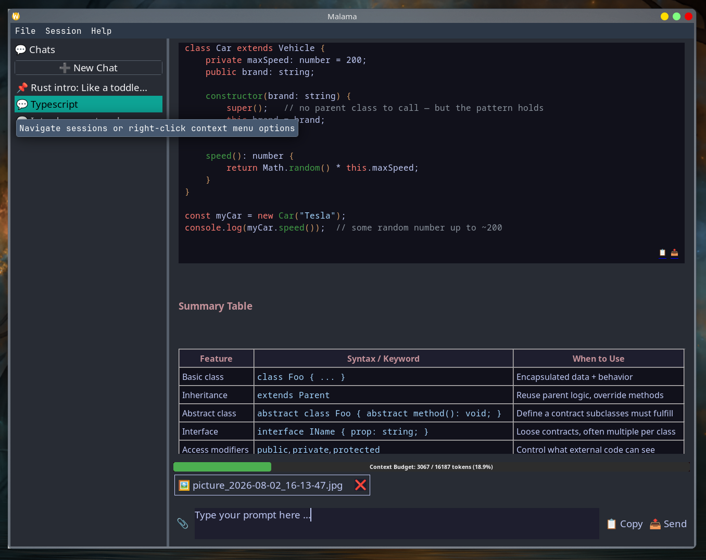
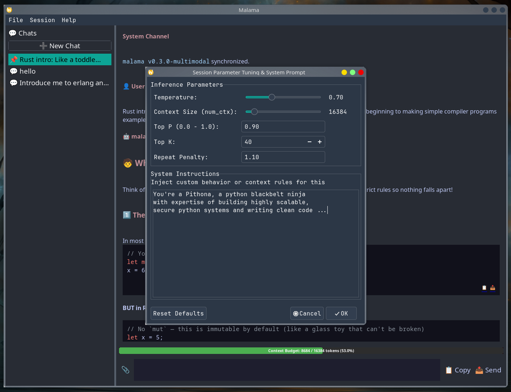
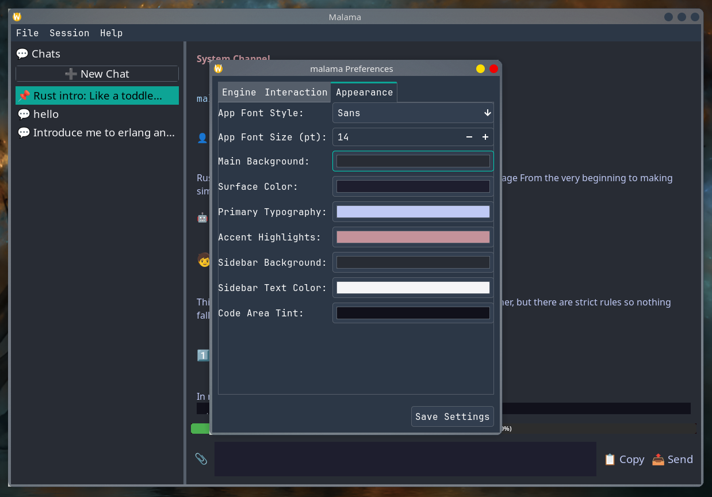
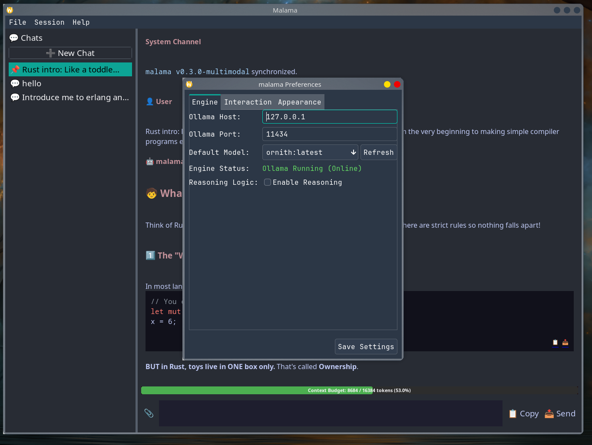
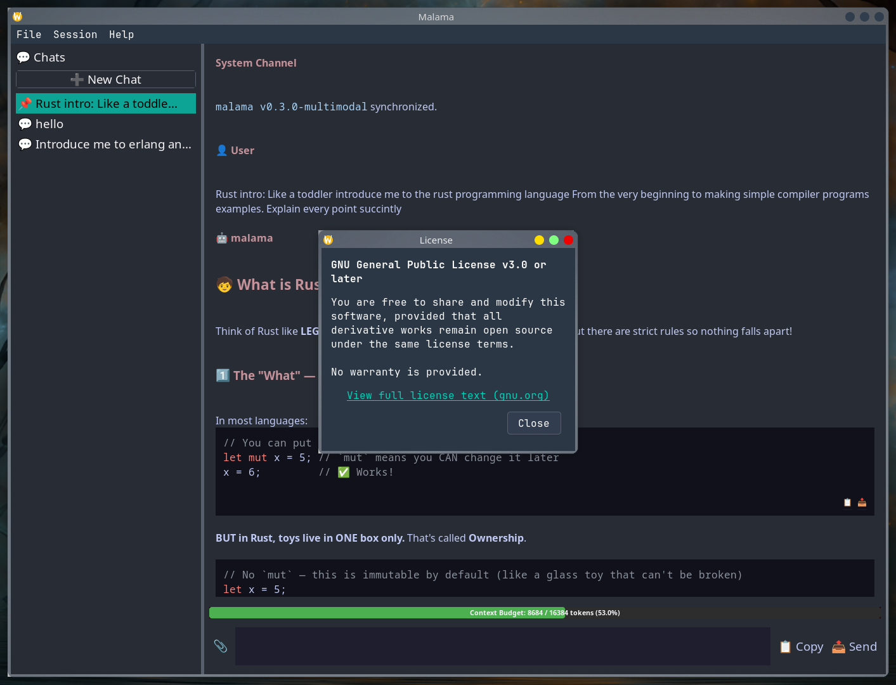
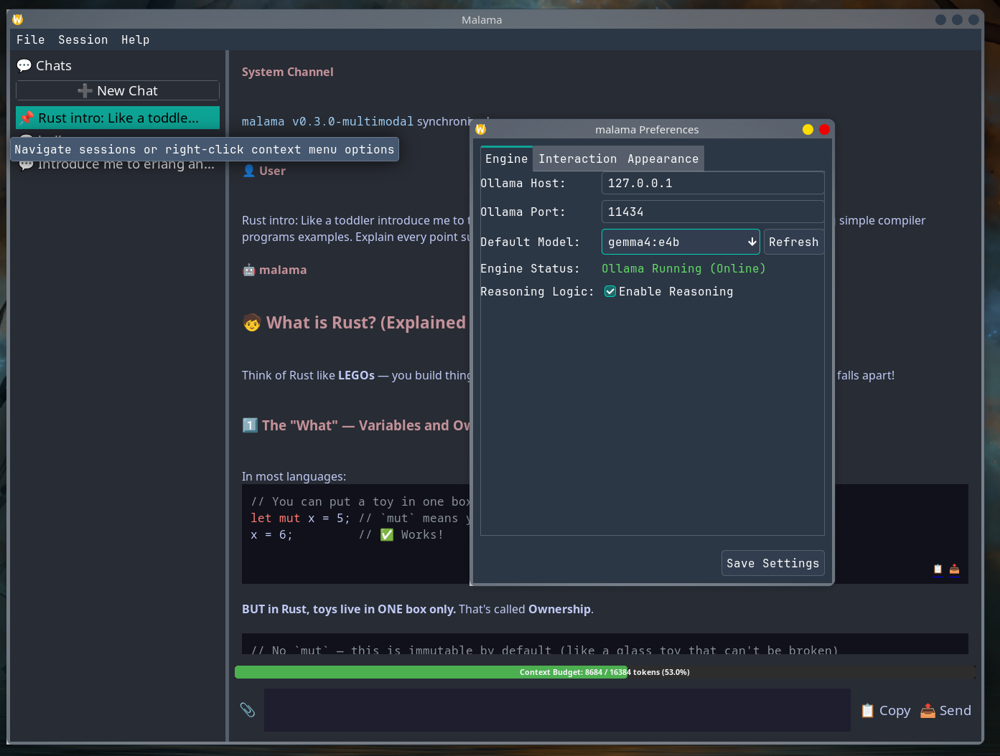

A high-performance Linux desktop client for Ollama. Direct TCP streaming, zero cloud dependencies, and instant local execution.

Why waste hundreds of megabytes of system RAM running browser wrappers when your GPU and CPU need that memory for local model inference?
Built with native GTK-backed wxWidgets 3.3 and C++23. Replaces Chromium/Node.js runtimes with a lightweight compiled native binary.
Connects directly to your local Ollama daemon over non-blocking Boost.Asio TCP sockets. No remote proxies, no web wrappers, no tracking.
Conversations, session titles, pinned items, and hyperparameter states are safely persisted using localized, transactional SQLite queries.

Explore the clean, functional GTK interface designed strictly for Linux productivity.




/api/tags endpoints, timeout bounds, and reasoning tag filters.
Control exact inference behavior per conversation turn or globally across the engine.
Tweak model behavior on a thread-by-thread basis without breaking application state:
num_ctx): Dynamically scale context capacity up to 32,000+ tokens to handle long multi-turn discussions and large document payloads.<think> blocks on the fly via a background thread state machine.
Factory-routed parser subsystem capable of reading documents, spreadsheets, eBooks, and vision assets with zero-copy efficiency.
| Asset Category | Supported Formats | Parsing Engine & Strategy | Operational Bounds |
|---|---|---|---|
| Plain Text | .txt, .md |
Direct UTF-8 stream ingestion | Bounded by available RAM |
| PDF Documents | .pdf |
Page text extraction via poppler-cpp |
4 MB per-file processing limit |
| Office Documents | .docx, .xlsx |
Archive decompression (libarchive) & XML traversal (pugixml) |
Bounded XML expansion checks |
| OpenDocument | .odt, .ods |
ZIP structure decompression & XML body node isolation | Boundary-verified extraction |
| E-Books | .epub |
XHTML manifest extraction and text traversal | Sanitizes layout markup |
| Images (Vision) | .png, .png, .jpeg, .webp |
Binary validation via libpng/libjpeg & Base64 encoding |
4 MB cap; requires vision model |
Native installation scripts and package pathways across major Linux distributions.
Clone the repository and run the native installer script to auto-detect dependencies, compile optimized binaries, and install launcher menu shortcuts:
git clone https://github.com/Magpiny/malama.git
cd malama
chmod +x install.sh
./install.shTo completely purge application binaries and desktop launchers, run ./uninstall.sh --purge.
sudo pacman -S --needed git cmake ninja pkgconf gcc \
wxwidgets-gtk3 sqlite poppler-cpp libarchive pugixml \
libpng libjpeg-turbo spdlog boost boost-libsgit clone https://github.com/Magpiny/malama.git
cd malama
chmod +x install.sh
./install.shsudo dnf install gcc-c++ cmake ninja-build pkgconfig \
wxGTK-devel sqlite-devel poppler-cpp-devel libarchive-devel \
pugixml-devel libpng-devel libjpeg-turbo-devel spdlog-devel boost-develgit clone https://github.com/Magpiny/malama.git
cd malama
chmod +x install.sh
./install.shsudo apt-get update && sudo apt-get install -y \
build-essential cmake ninja-build pkg-config \
libwxgtk3.2-dev sqlite3 libsqlite3-dev \
libpoppler-cpp-dev libarchive-dev libpugixml-dev \
libpng-dev libjpeg-dev libspdlog-dev libboost-all-devFor all other Linux distributions, download the standalone AppImage built directly from GitHub Releases:
wget https://github.com/Magpiny/malama/releases/latest/download/Malama-x86_64.AppImage
chmod +x Malama-x86_64.AppImage
./Malama-x86_64.AppImage| Library Name | Version Requirement | Operational Purpose & System Intent |
|---|---|---|
| wxWidgets | ≥ 3.3 | GTK3/4-backed native user interface rendering toolkit |
| SQLite3 | Stable Release | Relational conversation history storage & transactional persistence |
| Boost.Asio | ≥ 1.74 | Non-blocking asynchronous TCP socket loop for streaming Ollama tokens |
| poppler-cpp | Stable Release | PDF document interrogation and UTF-8 text mining parser |
| libarchive | ≥ 3.6 | Decompression engine for compressed format files (DOCX, ODT, EPUB) |
| pugixml | ≥ 1.12 | Lightweight XPath XML text node traversal for office documents |
| libpng / libjpeg | Stable Release | Binary validation and structural header verification for images |
| Boost.GIL | ≥ 1.74 | Graphic processing layout validation for multimodal payloads |
| glaze | ≥ 2.0 / v7.8 | High-performance compile-time JSON reflection for request payloads |
| spdlog | ≥ 1.12 | High-speed thread-synchronized application logging |